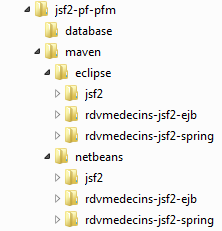
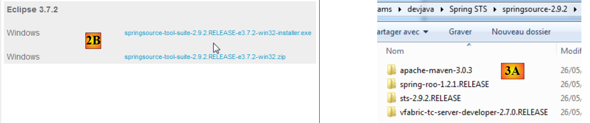
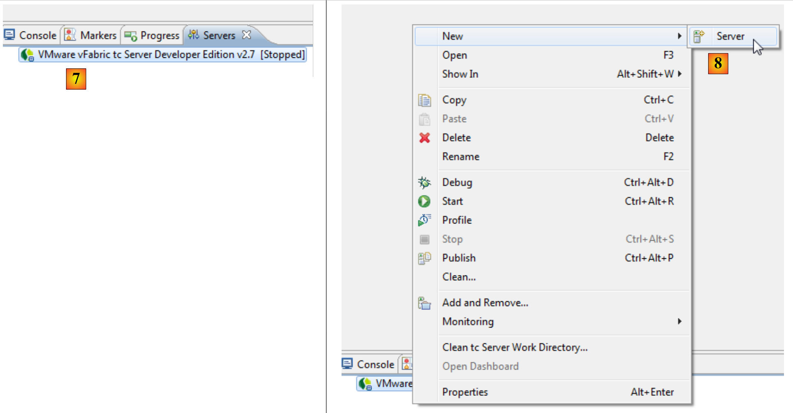
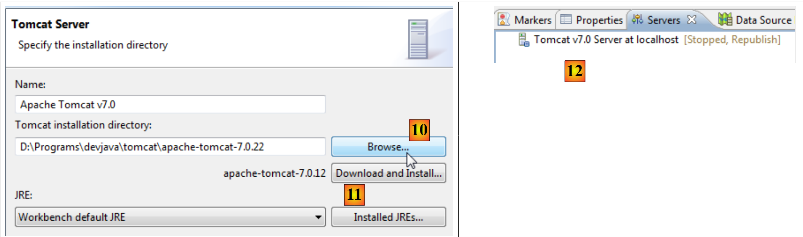
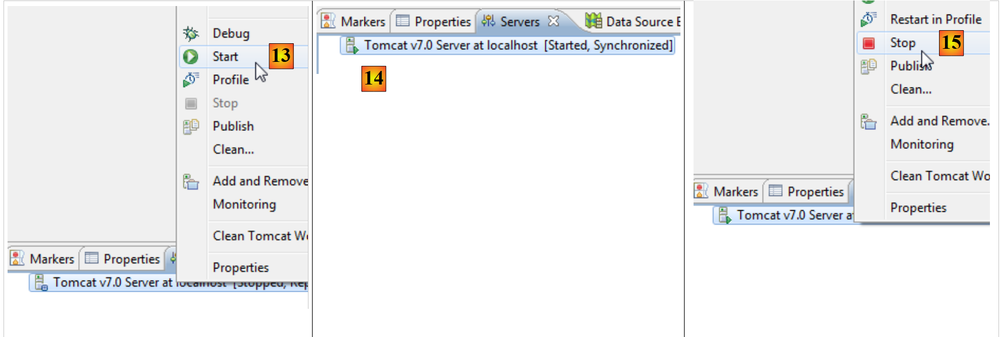
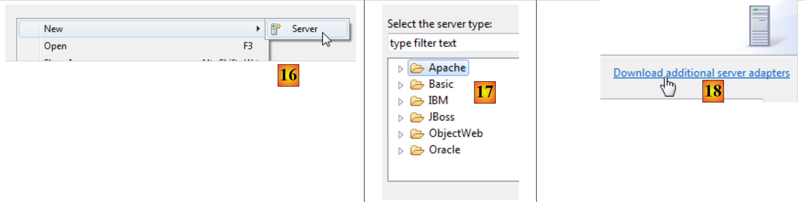
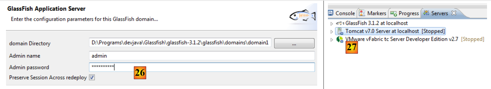
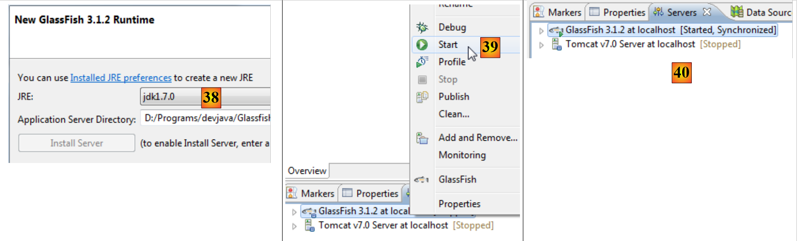

1. مقدمة
1.1. نظرة عامة
ملف PDF لهذا المستند متوفر |هنا|.
الأمثلة الواردة في هذا المستند متوفرة |هنا|.
نهدف هنا إلى تقديم، باستخدام أمثلة
- إطار عمل Java Server Faces 2 (JSF2)،
- ومكتبة مكونات PrimeFaces لـ JSF2، لتطبيقات سطح المكتب والأجهزة المحمولة.
هذا المستند مخصص في المقام الأول للطلاب والمطورين المهتمين بمكتبة مكونات PrimeFaces [http://www.primefaces.org]. يوفر هذا الإطار عشرات المكونات التي تدعم AJAX [http://www.primefaces.org/showcase/ui/home.jsf] والتي تتيح لك إنشاء تطبيقات ويب بمظهر وملمس مشابهين لتطبيقات سطح المكتب. يعتمد PrimeFaces على JSF2، ومن ثم تأتي الحاجة إلى تقديم هذا الإطار أولاً. يوفر PrimeFaces أيضًا مكونات محددة للأجهزة المحمولة. وسنغطيها أيضًا.
لتوضيح وجهة نظرنا، سنقوم بإنشاء تطبيق لجدولة المواعيد في بيئات مختلفة:
- تطبيق ويب كلاسيكي يستخدم تقنيات JSF2 / EJB3 / JPA على خادم GlassFish 3.1،
- نفس التطبيق مع دعم AJAX، باستخدام تقنية PrimeFaces،
- وأخيرًا، نسخة للجوال باستخدام تقنية PrimeFaces Mobile.
في كل مرة يتم فيها إنشاء إصدار، سنقوم بنشره في بيئة JSF2 / Spring / JPA على خادم Tomcat 7. وبالتالي، سنقوم بإنشاء ستة تطبيقات Java EE.
يغطي هذا المستند فقط ما هو ضروري لإنشاء هذه التطبيقات. لذلك، لا تتوقع أن يكون شاملاً — فلن تجد ذلك هنا. كما أنه ليس مجموعة من أفضل الممارسات. قد يجد المطورون ذوو الخبرة أنهم كانوا سيفعلون الأمور بشكل مختلف. آمل ببساطة ألا يكون هذا المستند مجموعة من الممارسات السيئة أيضًا.
لمعرفة المزيد عن JSF2 و PrimeFaces، يمكنك استخدام المرجع التالي :
- [ref1]: دليل Java EE5 [http://java.sun.com/javaee/5/docs/tutorial/doc/index.HTML]، مرجع Sun لتعلم Java EE5. اقرأ الجزء الثاني [Web Tier] لاستكشاف تقنية الويب، ولا سيما JSF. يمكن تنزيل أمثلة الدليل. وهي تأتي في شكل مشاريع NetBeans يمكن تحميلها وتشغيلها،
- [ref2]: Core JavaServer Faces بقلم David Geary و Cay S. Horstmann، الطبعة الثالثة، نشرته McGraw-Hill،
- [ref3]: وثائق PrimeFaces [http://primefaces.googlecode.com/files/primefaces_users_guide_3_2.pdf]،
- [المرجع 4]: وثائق PrimeFaces Mobile: [http://primefaces.googlecode.com/files/primefaces_mobile_users_guide_0_9_2.pdf].
سنشير من حين لآخر إلى [ref2] لنلفت انتباه القارئ إلى أنه يمكنه التعمق أكثر في موضوع ما من خلال هذا الكتاب.
تمت كتابة هذا المستند بحيث يكون في متناول أكبر عدد ممكن من القراء. والمتطلبات الأساسية لفهمه هي كما يلي:
- معرفة بلغة Java،
- معرفة أساسية بتطوير Java EE.
يمكن العثور على جميع الموارد اللازمة لتلبية هذه المتطلبات الأساسية على الموقع الإلكتروني [https://developpez.com]. ويمكن العثور على بعضها على الموقع الإلكتروني [https://stahe.github.io]:
- [ref5]: مقدمة إلى برمجة الويب بلغة Java (سبتمبر 2002): يغطي أساسيات برمجة الويب بلغة Java: السيرفلتات وصفحات JSP،
- [ref6]: أساسيات تطوير الويب MVC في Java (مايو 2006) []: يوصي بتطوير تطبيقات الويب باستخدام بنى ثلاثية الطبقات، حيث تنفذ طبقة الويب نمط تصميم MVC (النموذج، العرض، وحدة التحكم).
- [ref7]: مقدمة إلى Java EE 5 (يناير 2012).
- [المرجع 8]: استمرارية Java في الممارسة (يونيو 2007). يقدم هذا المستند مقدمة لاستمرارية البيانات باستخدام JPA (واجهة برمجة تطبيقات استمرارية Java).
- [ref9]: إنشاء خدمة ويب Java EE باستخدام NetBeans وخادم GlassFish (يناير 2009). يستكشف هذا المستند عملية إنشاء خدمة ويب. التطبيق النموذجي الذي تمت مناقشته في هذا المستند مأخوذ من [ref9].
1.2. النموذجي
الأمثلة الواردة في هذا المستند متاحة |هنا| كمشاريع Maven لكل من NetBeans و Eclipse:
 |
لاستيراد مشروع إلى NetBeans:
 |
- في [1]، افتح مشروعًا،
- في [2]، حدد المشروع المراد فتحه في نظام الملفات،
- في [3]، يتم فتحه.
باستخدام Eclipse،
 |
- في [1]، استيراد مشروع،
- في [2]، المشروع هو مشروع Maven موجود،
 |
 |
- في [3]: تختاره في نظام الملفات،
- في [4]: يتعرف Eclipse عليه كمشروع Maven،
- في [5]، المشروع المستورد.
1.3. الأدوات المستخدمة
من الآن فصاعدًا، نستخدم (اعتبارًا من مايو 2012):
- بيئة التطوير المتكاملة (IDE) NetBeans 7.1.2 المتوفرة على [http://www.netbeans.org]،
- بيئة التطوير المتكاملة Eclipse Indigo [http://www.eclipse.org/] في شكلها المخصص SpringSource Tool Suite (STS) [http://www.springsource.com/developer/sts]،
- إصدار PrimeFaces 3.2، متوفر على [http://primefaces.org/]،
- PrimeFaces Mobile الإصدار 0.9.2، متوفر على [http://primefaces.org/]،
- WampServer لقاعدة بيانات MySQL [http://www.wampserver.com/].
1.3.1. تثبيت بيئة تطوير NetBeans
نصف هنا كيفية تثبيت NetBeans 7.1.2، المتوفر على الرابط [http://netbeans.org/downloads/].
 |
يمكنك اختيار إصدار Java EE الذي يتضمن كلاً من GlassFish 3.1.2 و Apache Tomcat 7.0.22. يتيح لك الإصدار الأول تطوير تطبيقات Java EE باستخدام EJB3 (Enterprise JavaBeans)، بينما يتيح لك الإصدار الثاني تطوير تطبيقات Java EE بدون EJB. سنقوم بعد ذلك باستبدال EJBs بإطار عمل Spring [http://www.springsource.com/].
بمجرد تنزيل برنامج تثبيت NetBeans، قم بتشغيله. للقيام بذلك، يجب أن يكون لديك JDK (Java Development Kit) [http://www.oracle.com/technetwork/java/javase/overview/index.HTML]. بالإضافة إلى NetBeans 7.1.2، قم بتثبيت:
- إطار عمل JUnit لاختبار الوحدات،
- خادم GlassFish 3.1.2،
- خادم Tomcat 7.0.22.
بمجرد اكتمال التثبيت، قم بتشغيل NetBeans:
 |
- في [1]، NetBeans 7.1.2 مع ثلاث علامات تبويب:
- تعرض علامة التبويب [Projects] مشاريع NetBeans المفتوحة؛
- تعرض علامة التبويب [Files] الملفات المختلفة التي تشكل مشاريع NetBeans المفتوحة؛
- تجمع علامة التبويب [Services] عددًا من الأدوات المستخدمة في مشاريع NetBeans،
- في [2]، حدد علامة التبويب [Services]، وفي [3]، حدد قسم [Servers]؛
- في [4]، قم بتشغيل خادم Tomcat للتحقق من أنه مثبت بشكل صحيح،
 |
- في [6]، في علامة التبويب [Apache Tomcat] [5]، يمكنك التحقق من أن الخادم قد بدأ بشكل صحيح،
- في [7]، أوقف خادم Tomcat،
اتبع نفس الخطوات للتحقق من تثبيت خادم GlassFish 3.1.2 بشكل صحيح:
 |
- في [8]، قم بتشغيل خادم GlassFish،
- في [9]، تحقق من أنه قد بدأ بشكل صحيح،
 |
- في [10]، أوقفه.
لدينا الآن بيئة تطوير متكاملة تعمل بكامل طاقتها. يمكننا البدء في إنشاء المشاريع. وأثناء عملنا على هذه المشاريع، سنستكشف الميزات المختلفة لبيئة التطوير هذه.
سنقوم الآن بتثبيت بيئة تطوير Eclipse وتسجيل الخادمين — Tomcat 7 و GlassFish 3.1.2 — اللذين قمنا بتنزيلهما للتو داخلها. للقيام بذلك، نحتاج إلى معرفة مجلدات التثبيت لهذين الخادمين. يمكن العثور على هذه المعلومات في خصائص هذين الخادمين:
 |
- في [1]، مجلد التثبيت لـ Tomcat 7،
 |
- في [2]، مجلد مجالات خادم GlassFish. عند تسجيل GlassFish في Eclipse، ستحتاج فقط إلى تقديم المعلومات التالية [D:\Programs\devjava\Glassfish\glassfish-3.1.2\glassfish].
1.3.2. تثبيت بيئة تطوير Eclipse
على الرغم من أن Eclipse ليس بيئة التطوير المتكاملة المستخدمة في هذا المستند، إلا أننا سنشرح كيفية تثبيته. وذلك لأن الأمثلة الواردة في المستند متوفرة أيضًا كمشاريع Maven لـ Eclipse. لا يأتي Eclipse مزودًا بـ Maven مثبتًا مسبقًا. يجب عليك تثبيت مكون إضافي للقيام بذلك. بدلاً من تثبيت Eclipse الأساسي، سنقوم بتثبيت SpringSource Tool Suite [http://www.springsource.com/developer/sts]، وهو Eclipse مزود مسبقًا بالعديد من المكونات الإضافية المتعلقة بإطار عمل Spring بالإضافة إلى تكوين Maven مثبت مسبقًا.
 |
- انتقل إلى موقع SpringSource Tool Suite (STS) [1] لتنزيل الإصدار الحالي من STS [2A] [2B].
 |
 |
- الملف الذي تم تنزيله هو برنامج تثبيت يقوم بإنشاء بنية دليل الملفات [3A] [3B]. في [4]، نقوم بتشغيل الملف القابل للتنفيذ،
- وفي [5]، تظهر مساحة عمل IDE بعد إغلاق نافذة الترحيب. وفي [6]، تظهر نافذة خوادم التطبيقات،
 |
- في [7]، نرى نافذة الخوادم. هناك خادم مسجل. إنه خادم VMware لن نستخدمه. في [8]، نستدعي المعالج لإضافة خادم جديد،
 |
- في [9A]، يتم عرض خوادم متنوعة. نختار تثبيت خادم Apache Tomcat 7 [9B]،
 |
- في [10]، نحدد دليل التثبيت لخادم Tomcat 7 المثبت مع NetBeans. إذا لم يكن لديك خادم Tomcat، فاستخدم الزر [11]،
- في [12]، يظهر خادم Tomcat في نافذة [Servers]،
 |
- في [13]، نقوم بتشغيل الخادم،
- في [14]، يكون قيد التشغيل،
- في [15]، نقوم بإيقافه.
في نافذة [Console]، يجب أن ترى سجلات Tomcat التالية إذا كان كل شيء يعمل بشكل صحيح:
 |
- لا تزال في نافذة [الخوادم]، أضف خادمًا جديدًا [16]،
- في [17]، خادم Glassfish غير مدرج،
- في هذه الحالة، استخدم الرابط [18]،
 |
- في [19]، اختر إضافة محول لخادم GlassFish،
- سيتم تنزيله، ثم عد إلى نافذة [الخوادم]، وأضف خادمًا جديدًا،
- هذه المرة في [21]، يتم سرد خوادم GlassFish،
 |
- في [22]، حدد خادم GlassFish 3.1.2 الذي تم تنزيله مع NetBeans،
- في [23]، حدد مجلد تثبيت GlassFish 3.1.2 (انتبه للمسار المشار إليه في [24])،
- إذا لم يكن لديك خادم GlassFish، فاستخدم الزر [25]،
 |
- في [26]، يطلب المعالج كلمة مرور مسؤول خادم GlassFish. بالنسبة للتثبيت الأول، تكون كلمة المرور عادةً adminadmin،
- بمجرد انتهاء المعالج، يظهر خادم GlassFish في نافذة [الخوادم] [27]،
 |
- في [28]، قم بتشغيله،
- في [29]، قد تنشأ مشكلة. وهذا يعتمد على المعلومات المقدمة أثناء التثبيت. يتطلب GlassFish وجود JDK (مجموعة أدوات تطوير Java) وليس JRE (بيئة تشغيل Java)،
- للوصول إلى خصائص خادم GlassFish، انقر عليه مرتين في نافذة [Servers]،
- مما يفتح نافذة [20]؛ هناك، اتبع رابط [Runtime Environment]،
 |
- في [31]، سنقوم باستبدال JRE الافتراضي بـ JDK. للقيام بذلك، استخدم الرابط [32]،
- في [33]، JREs المثبتة على الجهاز،
- في [34]، أضف واحدًا آخر،
 |
- في [35]، حدد [Standard VM] (آلة افتراضية)،
- في [36]، حدد JDK (>=1.6)،
- في [37]، أدخل اسمًا لـ JRE الجديد،
 |
- بالعودة إلى شاشة اختيار JRE لـ GlassFish، حدد JRE الجديد المحدد في [38]،
- بمجرد اكتمال معالج التكوين، أعد تشغيل [Glassfish] [39]،
- في [40]، يتم تشغيله،
 |
- في [41]، شجرة دليل الخادم،
- في [42]، نصل إلى سجلات GlassFish:
 |
- في [43]، نقوم بإيقاف خادم Glassfish.
1.3.3. تثبيت [ WampServer]
[WampServer] هو مجموعة برامج مخصصة للتطوير باستخدام PHP/MySQL/Apache على جهاز يعمل بنظام Windows. سنستخدمه حصريًا لنظام إدارة قواعد البيانات MySQL.
 |
- على موقع [WampServer] [1]، اختر الإصدار المناسب [2]،
- الملف القابل للتنفيذ الذي تم تنزيله هو برنامج تثبيت. يتم طلب معلومات متنوعة أثناء التثبيت. هذه المعلومات لا تتعلق بـ MySQL، لذا يمكن تجاهلها. تظهر النافذة [3] في نهاية التثبيت. قم بتشغيل [WampServer]،
 |
- في [4]، يظهر رمز [WampServer] في شريط المهام أسفل يمين الشاشة [4]،
- وعند النقر عليه، تظهر قائمة [5]. تتيح لك هذه القائمة إدارة خادم Apache ونظام إدارة قواعد البيانات MySQL. لإدارة هذا الأخير، استخدم خيار [PhpMyAdmin]،
- الذي يفتح النافذة الموضحة أدناه،

سنقدم بعض التفاصيل حول استخدام [PhpMyAdmin]. سنعرض ببساطة كيفية استخدامه لإنشاء قاعدة البيانات لتطبيق المثال في هذا البرنامج التعليمي.